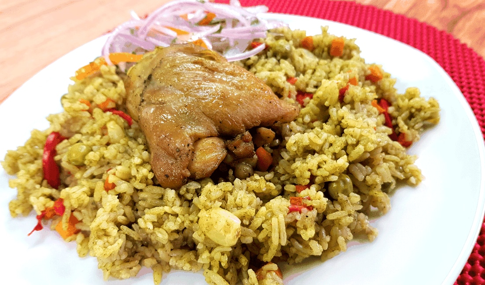

Arroz con pollo

Description
This is a Peruvian rice and chicken dish
made with cilantro and a special Peruvian kick.
It's very delicious, my Peruvian father-in-law said
that mine was even better then his sister's -
who is one of the best cooks in the family (
besides my mother-in-law)!
Goes great with Huancaina sauce and salsa Criolla EDIT EDIT.
Ingredientes
- 3 skinless, boneless chicken breasts, cut in half
- salt and ground black pepper to taste
- 3 cloves garlic, minced
- ½ cup chicken broth
Steps
- Season chicken with salt and pepper.
- Heat a large saucepan over medium-high heat with enough oil to coat the bottom. Brown chicken in the hot oil on all sides, 5 to 7 minutes total. Remove chicken onto a plate.
- Pour more oil into the pan and add onion; saute until translucent, about 5 minutes. Add garlic and saute, 1 to 2 minutes. Stir in cilantro, chile paste, salt, and pepper and saute until cilantro turns dark green, 3 to 5 minutes. Pour in chicken broth and deglaze, scraping the browned bits off the bottom of the pan with a wooden spoon. Bring to a light simmer; let simmer for 3 to 5 minutes.
- Transfer mixture carefully to an electric blender and puree.